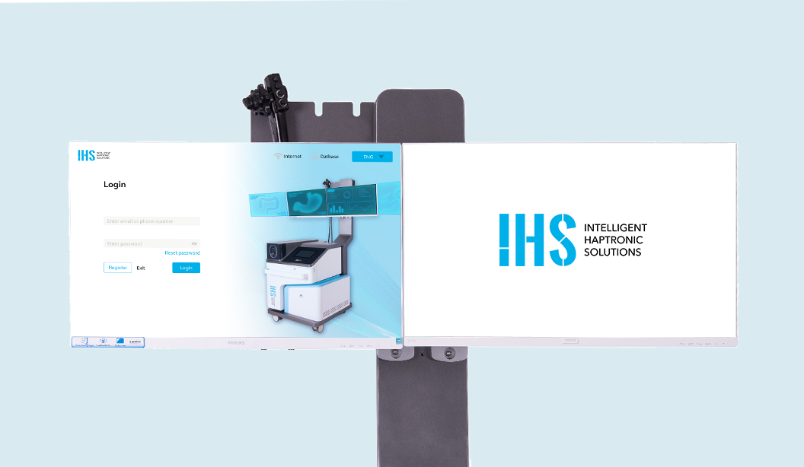
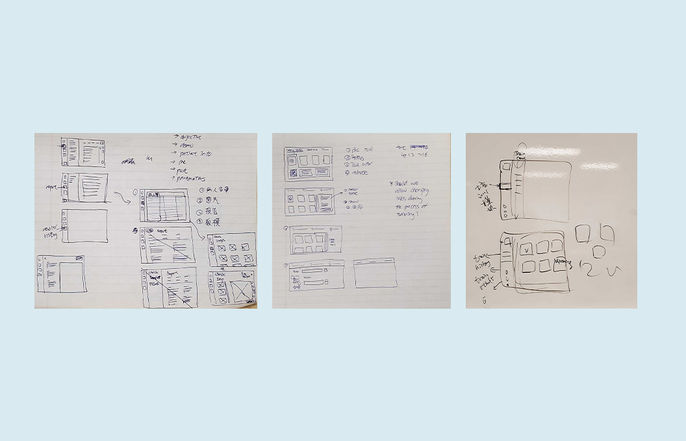
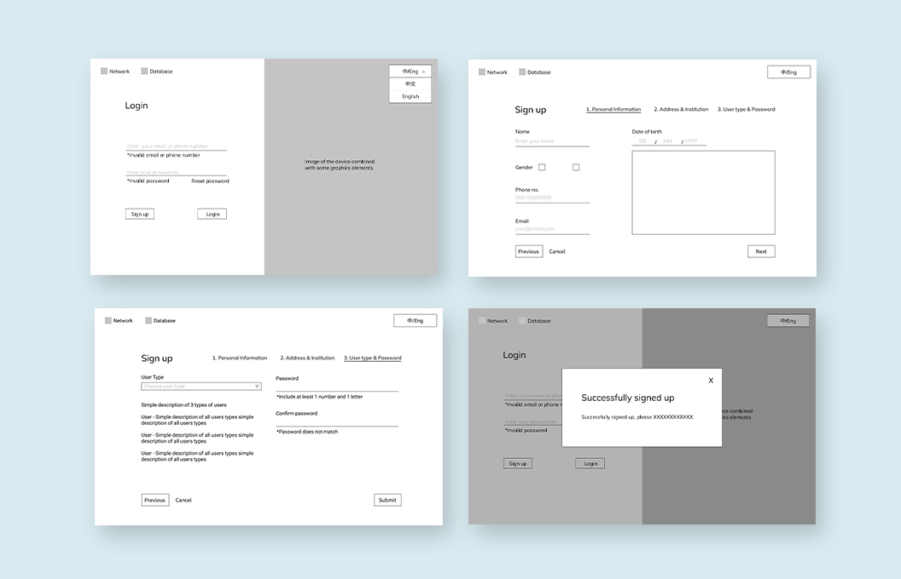
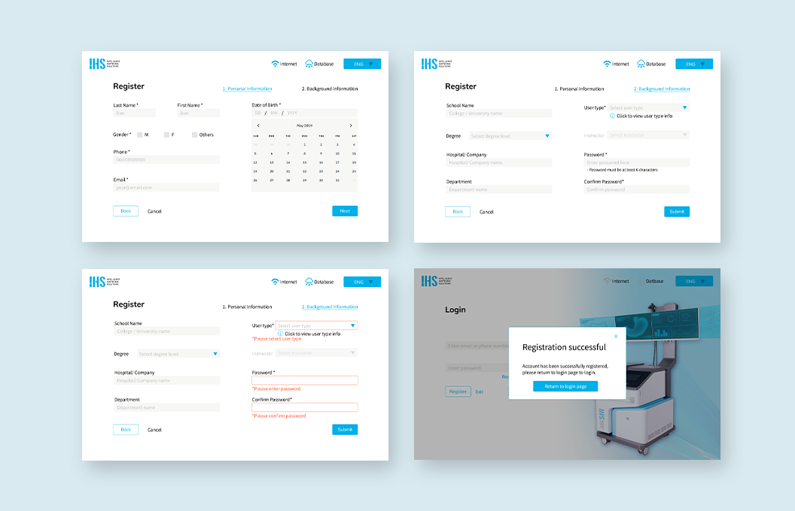
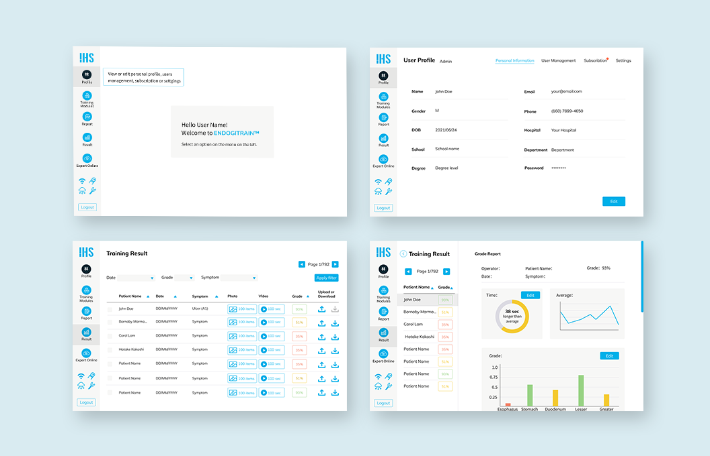
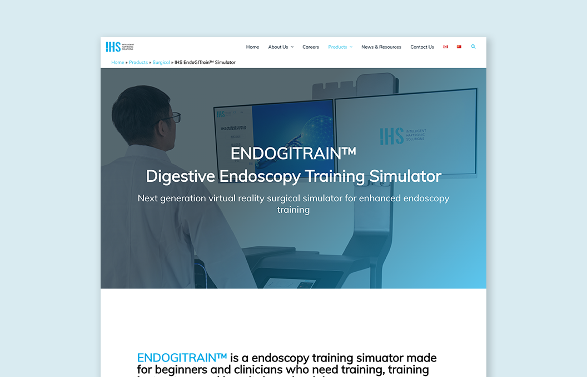

Intelligent Haptronic Solutions

Company: Intelligent Haptronic Solutions (IHS), EdTech SaaS startup
Position: UX/UI and graphic designer
Date: Jan 2021 - Sep 2020
Services: UX/UI Design, Graphic Design
Intelligent Haptronic Solutions (IHS) is a startup robotic company that develops simulation devices with haptic technology. Their most recent product, ENDOGITRAIN™, is a surgical endoscopy training simulator that holds great potential in replacing the current patient-based endoscopy training.

ENDOGITRAIN™ is a newly developed endoscopy training product that needs to restructure the visually outdated UI to a more professional look and explore user-friendly methods to guide users through complicated surgical procedures. This involves in-depth user research, restructuring user workflow, creating new functions, and redesigning the whole UI kit and UI. The product also needs a new trademark logo, a new product page on the company’s website, showcase and testimonial videos, print and digital marketing materials and more.
To restructure the UI design, I started by observing and learning about the endoscopy procedure with online and internal resources. Then, I performed in-depth user research, and created multiple personas and use cases. 
After a brief discussion with the CTO, I quickly moved forward to low-fidelity wireframing on Figma. Throughout the process, I did reverse engineering on several UI designs to learn different ways to break down complicated procedures into a set of easy-to-navigate UI. Also, I review my design based on research studies to ensure it meets with industry standards and user expectations.  
I completed a high-fidelity wireframe and partnered with the engineering team closely to reproduce the UI in Unity. For testing purposes, I compiled a user flow diagram and shared it together with a Figma project link with the hardware, software and marketing team.
I then read through all feedback, discuss problematic designs with team members, and make iterations to update the UI. I also make sure communication with the engineering team is clear by letting them know about the updates I made to the Figma project.

With the newly designed GUI, sales drastically went up by 300%. I elevated the overall user-friendliness of the LCD touch screen and the dual monitor Unity software by implementing 11 more functions to the software. In addition to the UI design, I also created the trademark logo, a new product webpage, edited showcase and testimonial videos, designed print and digital marketing materials and the company's business card.
